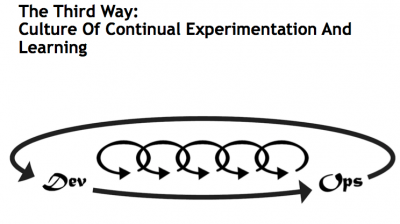

BreadOps
Continuous Delivery of Fresh Baked Bread
Created by Paul Czarkowski / @pczarkowski
Bread is not the enemy
Cake disguised as Bread is the enemy
There is a lot of FUD out there
If you can't pronounce it, don't eat it.*
* logical fallacy, but not a terrible rule of thumb.
If buying bread look for least number of ingredients
- Flour
- Water
- Salt
- Yeast / Sourdough Culture
Better yet ... Bake it yourself
Apply DevOps Principals
The Project Management Triangle
Apply DevOps Principals
Aint nobody got time for that
Apply DevOps Principals
Feedback Loops
- Initially optimized for Quality.
- Then optimized for Time.
Apply DevOps Principals
CAMS
- Culture
- Automation
- Measurement
- Sharing
Culture
- Lactobacillus … HAHAHAHA Bakers joke!
- Minimize time and effort to reduce impact on normal life.
- Maximize fermentation time ( less sugar, more digestible ).
- Eating great bread that you made yourself very rewarding.
Automation
- Slow ferment reduces requirement to knead to almost zero.
- Refrigerating the dough allows me to take control of the timetable.
- Usable for 5-7 days from the fridge. Multiple loaves from the one batch.
Measurement
- How much active time did I spend on it ?
- How long did it take to ferment?
- How is the crust? How is the crumb ?
- Is it better or worse than the previous iteration ?
- How much of each ingredient ?
Sharing
- I make more bread than I can eat. Friends benefit from this.
- Ensure my process is approachable by others.
- Share my process.
Tools
- kitchen scale ( grams! )
- Baking stone
- Mixing bowls
- Plastic Wrap
- A fork or a dough whisk
Ingredients
- Flour (King Arthur Bread Flour)
- Water
- Salt
- Yeast (or sourdough culture)
- Olive Oil ( maybe )
Stage 1 - The Starter
Combine 50g each of Flour and Water
with 3g Yeast in a small bowl.
Cover and leave it on the bench.
Green protip: cover with a shower cap
Stage 1 - The Starter
4-6 hours later.
Stage 2 - The Mix
Mix the Starter and 375g of water in a large bowl until it looks like milk
Metric protip: a gram of water is the same as a milliliter of water
Stage 2 - The Mix
Mix in 500g flour and 15g salt.
we’re not kneading here, just making sure there is no dry flour left
Stage 3 - Fermentation
Cover the bowl and leave it at room temperature for 4 to 8 hours and then put in fridge.
It should have started rising, approx 150%.
Stage 4 - Shaping
tip: Whenever you are working with the dough, it is important to try to lose as little air as possible. Do not punch it down.
Stage 4 - Shaping
Lightly flour the bench and turn out your dough. Cut off a piece to use and put the rest back in the bowl and back into the fridge
You can use the final piece of dough as the starter for the next batch
Stage 4 - Shaping
Gently stretch the piece dough out into a squarish shape and then fold each edge into the middle
you can actually bake it unshaped and get a very rustic ciabatta
Stage 4 - Shaping
Turn the dough over and shape it into a ball
Tip: lots of good videos on shaping dough on youtube.
Stage 4 - Shaping
place shaped dough into oiled bowl seam side up and cover.
Crank oven to 500F
Tip: for better results leave for 1-2 hours before baking
Stage 5 - Baking
When oven is screaming hot upend the bowl onto baking stone and run a knife quickly over the top to create a shallow cut
Tip: Pull shelf all the way out so you don't burn yourself.
Stage 5 - Baking
Bake for 5 minutes, then turn the oven down to 450F and bake for another 20 minutes.
High initial temp helps kick off the oven rise and crust.
Stage 5 - Baking
Remove from oven and allow to cool completely.

Bread continues to cook while cooling.
Stage 6 - Eat
Eat it!
Tip: Pour high quality EVOO onto plate then drizzle with Balsamic. Dip bread in this.
Other Shapes
Pizza
Bonus Tips
- Make your starter from Ikea’s BRÖDMIX FLERKORN which contains all sorts of interesting grains as well as Yeast and “Sourdough Powder” whatever that is.
- Make sourdough pancakes from your leftover starter.
- Shape your dough into a pizza dough and bake it in a cast iron skillet.
- You don’t have to make round loafs. use a sandwhich loaf tin, or make ciabatta or baguettes. It’s all it the shaping.
- use more water and ferment for longer. you’ll get cazy large holes in your crumb.